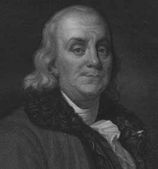

BENJAMIN FRANKLIN 1706-1790
Saya pikir
pantaslah kalau saya bilang Benjamin Franklin itu orang
genius yang paling punya banyak kebisaan. di sepanjang
sejarah. Dia punya hasil karya punya daya jangkau lebih luas
dari Leonardo da Vinci yang kesohor. Mengherankan tetapi
benar, Franklin amat sukses dalam kariernya yang
terpisah-pisah satu sama lain: bidang bisnis berhasil,
bidang ilmu berhasil, bidang sastra berhasil, dan bidang
politik pun berhasil. Satu hasil borongan yang langka!
Karier bisnis Franklin bagaikan dongeng kuno: dari
pedagang rombengan sampai jadi kaya raya. Keluarganya di
Boston bukanlah orang berada. Selaku anak muda di
Philadelphia dia betul-betul kempes kantong, tetapi
menjelang umur empat puluh tahunan Franklin sudah tersulap
jadi jutawan lewat dia punya percetakan, dia punya
perusahaan surat kabar, dan dia punya pelbagai usaha lain.
Sementara itu, dalam masa senggangnya, dia belajar ilmu dan
belajar sendiri empat bahasa asing!
Sebagai ilmuwan, Franklin terkenal dengan dia punya
penyelidikan dasar tentang listrik dan cahaya. Berbarengan
dengan itu dia juga mencipta pelbagai penemuan yang punya
banyak guna, termasuk "tungku Franklin" lensa dengan fokus
ganda, dan pistol cahaya. Dua penemuannya yang disebut
terakhir masih digunakan orang hingga kini.
Percobaan tulis-menulis Franklin pertama yang berhasil
adalah selaku wartawan. Dia terbitkan Poor Richard's
Almanac, yang berisi bakat luar biasanya memutar balik
potongan-potongan kalimat. (Tak banyak penulis yang
meninggalkan begitu banyak ungkapan-uangkapan yang tak
terlupakan). Di akhir-akhir hayatnya dia menyusun
otobiografinya, sebuah karya termasyhur yang pernah ditulis
dan hingga kini masih dibaca dan digemari orang.
Di bidang politik, Franklin berhasil seperti halnya dia
juga sukses sebagai administrator (dia menjabat kepala
urusan pos untuk daerah-daerah koloni dan di bawah
pimpinannya urusan pos menunjukkan keuntungan!); dan selaku
legislator (dia terpilih berulang kali di Dewan Perwakilan
Rakyat Pennsylvania): sebagai diplomat (dia amat populer dan
sukses selaku Duta Besar untuk Perancis dalam masa yang
sulit dalam sejarah Amerika). Tambahan pula, dia merupakan
salah seorang penandatangan Deklarasi Kemerdekaan Amerika
Serikat dan kemudian jadi anggota Konvensi Konstitusi.
Masih ada lagi? Masih. Karier kelima Franklin ialah: dia
seorang pembangkit semangat dan organisator masyarakat.
Misalnya, dia merupakan salah seorang pendiri rumah sakit
pertama di Philadelphia. Dia membantu mengorganisir
perusahaan pemadam kebakaran dan mendorong hingga berhasil
terbentuknya kantor polisi urusan kota, Dia mengorganisir
perpustakaan keliling (yang pertama!) dan kelompok
masyarakat ilmuwan (juga yang pertama!).
Seperti halnya tiap orang, Franklin juga punya
kesulitan-kesulitan dan kekecewaan yang membikin dia punya
kalbu sedih. Meski begitu, hidupnya merupakan contoh luar
biasa --mungkin yang paling luar biasa dalam sejarah--yang
bisa dilakukan seorang manusia. Diberkati oleh kesehatannya
yang baik hampir sepanjang umurnya yang delapan puluh empat
tahun, Franklin mengalami ihwal hidup yang panjang, menarik,
bermanfaat, beragama, dan umumnya bahagia di dunia fana
ini.
Ditilik dari semua hal yang telah disebut di atas,
tampaknya menarik juga untuk memasukkan Franklin dalam
bagian utama buku ini. Tetapi, tak satu pun sumbangannya
cukup penting baginya untuk dianggap salah seorang dari
seratus tokoh yang paling berpengaruh dalam sejarah. Saya
sendiri berpendapat begitu, walau dengan pertimbangan semua
perbuatannya itu digabung jadi satu, toh belum cukup
juga.
|